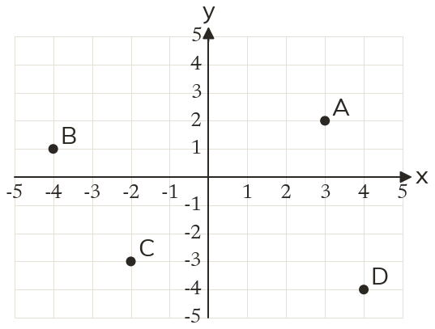
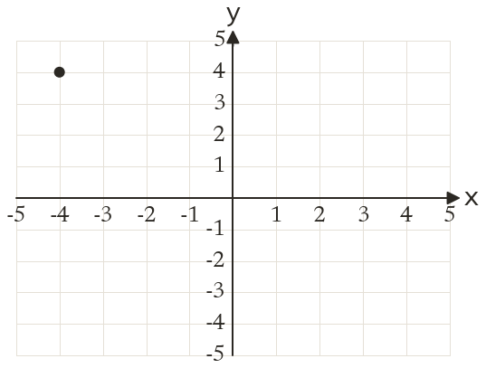
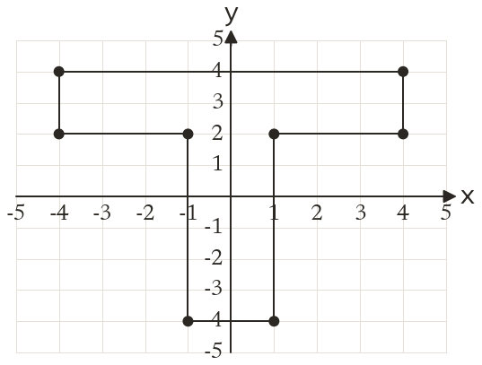

Westonbirt Maths · Coordinates, Graphs and Inequalities
Coordinates and Straight Lines
Name: ______________________ Date: ____________
1
Write down the coordinates of A, B, C and D.
2
Plot these points on the grid and join them in order, back to the start: What letter have you drawn?
3
Which quadrant is in?
4
A point is on the x-axis, to the left of the origin. Write down its coordinates.
Ext
A point is in the fourth quadrant, units from each axis. Write its coordinates.


